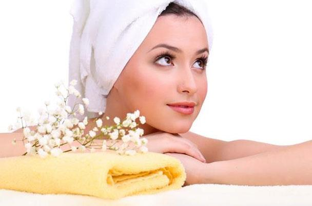

<!-- We don't need full layout here, because this page will be parsed with Ajax-->
<!-- Top Navbar-->

<div class="pages">
  <!-- Page, data-page contains page name-->
  <div data-page="about" class="page">
    <!-- Scrollable page content-->
    <div class="page-content">
      <div class="navbar">
  <div class="navbar-inner">
    <div class="left"><a href="#" class="back link"> <i class="icon icon-back"></i><span>العوده </span></a></div>
    <div class="center sliding">   </div>
    <div class="right">
       
      <!-- Right link contains only icon - additional "icon-only" class--><a href="#" class="link icon-only open-panel"> <i class="icon icon-bars"></i></a>
    </div>
  </div>
</div>
      <div class="content-block presentcon">
<div class="row">
  <div class="col-100">

  </div>
</div>

<div class="row t">
 <div class="col-100">
  
 الحصول على بشرة نقية مشرقة خالية من التجاعيد من الأمور الشاقة التي ترهق المرأة، سواء ماديا أو بحثا وراء كل منتجات العناية بالبشرة وهنا نقول لك ودعي كل هذه الكريمات وطبقي ماسك الخميرة على بشرتك الذي يمنحك نتيجة رائعة ويغنيك عن شراء هذه الكريمات، اكتشفي كيفية تطبيقه في المنزل واستفيدي منه قبل فوات الأوان :
 <br>
 <h4>فوائد مكونات الخلطة :</h4>
  ملعقة كبيرة من الخميرة: تحافظ الخميرة على رطوبة البشرة ومرونتها، لذلك تستعمل لاسيما لشدّها والمحافظة على شكلها النضر والمشرق، لديها القدرة على تعبئة خطوط التجاعيد الرّفيعة والتخلص من علامات التعب.
  <br>
    ملقعة كبيرة من العسل: ينقّي العسل البشرة ويطهر مسامها من السموم ليمنع ظهور البثور وحبّ الشباب، يعمل على تبييض البشرة وإعادة الإشراق إليها.
    <br>
   ملعقة كبيرة من الزبادي: لا يكتفي الزبادي بترطيب البشرة والتخلّص من خطوط الجفاف الرّفيعة والتجاعيد، إنما يعمل على تبييضها أيضاً وإعادة الإشراق إليها.
   <br>
    ملعقة صغيرة من عصير الليمون لصاحبات البشرة الدهنية: يساهم عصير الليمون في التخلص من إفرازات زيوت الوجه الدهنية، ويعمل بشكل مثالي على إخفاء الندوب وبقع الوجه الداكنة.
    <br>
طريقة تطبيق الخلطة:
أخلطي المكونات جيداً في وعاء لتحصلي على عجينة متماسكة، وطبّقيها على بشرة وجهك وما حول عينيك لـ 30 دقيقة على الأقل، تخلّصي فيما بعد من التركيبة بالمياه الباردة،  ستشعرين فوراً بنتيجة رائعة.
</div>
</div>
   </div>
    </div>
  </div>
</div>